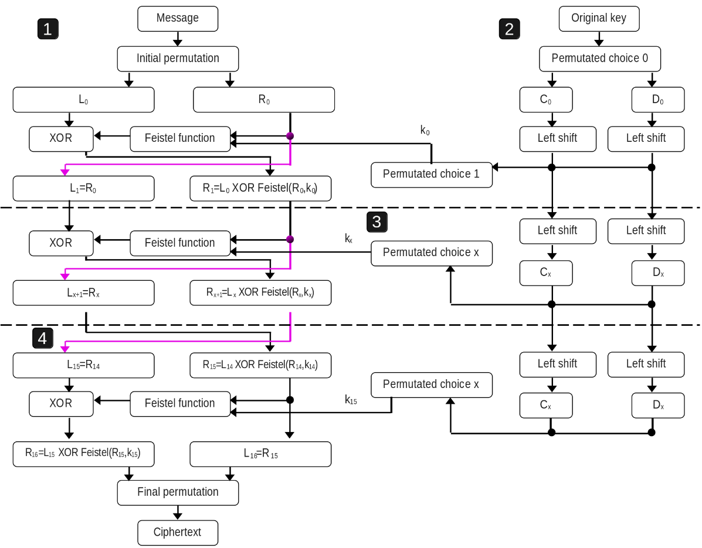
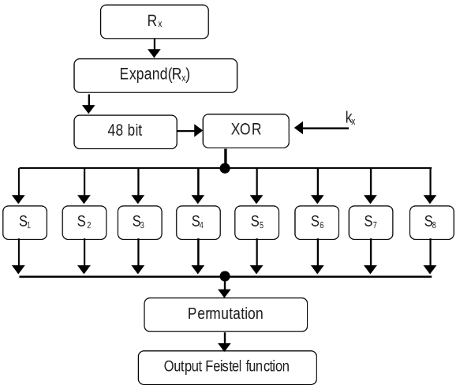
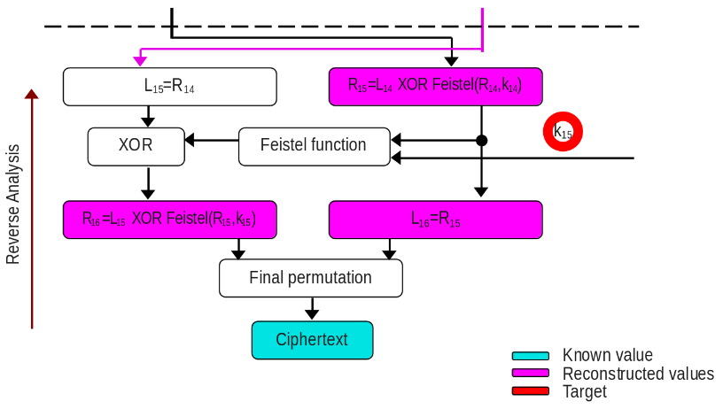
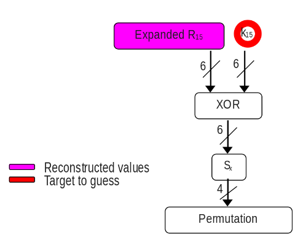

As part of the course’s laboratories of Hardware Security Spring 2026 at EURECOM by professor Renaud Pacalet.
To assure confidentiality, many different types of cryptography algorithms exist. Their beauty is that instead of protecting the whole messages and the algorithms, only the keys must be protected and usually the keys’ sizes are lower (by far) than the messages’ sizes. It makes them feasible for implementing in the systems. However, the keys may be still leaked when there is a correlection between the physical parameters and behavior of the cryptosystem. So, developers should consider the protection of those side channels. This article will explain how by analyzing the behavior of the time and power, keys can be extracted, but before going there, the DES (Data Encryption Standard) crypto algorithm will be explained as it is the victim in both scenarios.
This encryption algorithm used to be the standard some years ago because its key size (56 bits) is not enough now, as it can be guessed with a brute force attack in some days or even hours. However, this algorithm is useful to understand how key can be extracted with side channel analysis. The reason is its architecture by itself can provide a lot of information that makes this analysis even easier. Let’s understand some aspects of the DES to be ready to carry out the analysis.

Inside DES, we can see as three subsystems. The first one is illustrated in the whole right side of the above image. That is named the key schedule whose purpose is to generate a key for each round with shift lefts and some permutation choice. The second one (left side from above image) is the architecture which is in charge of receiving the message and the keys for each round, and perform the encryption.
- The message is 64-bit size and initial permutation is applied, it only moves the position of the bit according to a pre-defined table in page 9 of the DES FIPS paper. Then the 32 bits Most Significant Bits (MSB) are moved to L0, and the rest (also 32 bits) to R0.
- The next value of L (L1) will be directly the value of R0.
- In order to calculate R1, Feistel function is applied to R0 and k0 (later will be explained this function in detail). And then, the result will be XORed with L0.
These steps are repeated (except the Initial permutation) in each round, in total they are 16 rounds. In the last round (after performing the last feistel function and XOR, but before the inverse initial permutation), the L16 is now the right side of the pre-output ciphertext, and R16 is the left one. After, the inverse initial permutation is invoked and the ciphertext is the complete.

The third subsystem is the Feistel function and it is illustrated in the image above. The value of Rx from 32 bit is expanded to 48 bit (by duplicating some bits), then the subkey of that round (also 48 bits) is XORed with the expansion of Rx. The result from the XOR is separated by 6 bits per SBOX and the output will be of 4-bit size, so 32 bits when concatenated. The SBOX tables are fixed and only replaces the input value, this table is in page 12 of the DES FIPS paper.
The professor provided us his APIs:
- DES in C. All the required components to carry out the DES encryption & decryption are in that API, even there is a function that verifies the its correct implemetation with checksum of the outputs (plaintext, ciphertext, and secret keys). There are hamming weigth and distance functions, but they are useful for leaking the key (it will be explain later in this article).
- Utils in C. Most of them are wrappers to allocate memory and open files. There are a couple of functions that prints error and warning.
- PCC in C. Pearson Correlations Coefficients that calculates how two variables move together in a line. When the value is near from +1 or -1 (the limits), it means that the correlation is strong. In contrast to when it is almost zero, means no correlation.
More provided resources: the messages with their respective ciphertext and trace (either time or power).
The permutation function is vulnerable to timing attacks, it was created on purpose as part of the laboratory. Some condition statements were added, and this makes the timing trace changes based on permutation function’s input. By the way, the permutation block will receive the output of the SBOXes concatenated. By looking at the implementetion of this permutation function (next code), it is noticeable that there is if condition when the value is one, it processes more code. Meaning that it will take more time than if it were a zero. Then, the more ones it contains, the more time it must take. In addition, this vulnerability implemented near where subkey is computed, makes time to be correlated with ones and zeroes of the subkey and the expanded Rx. Therefore, the subkey can be leaked.
// Permutation table. Input bit #16 is output bit #1 and
// input bit #25 is output bit #32.
p_table = {16, 7, 20, 21,
29, 12, 28, 17,
1, 15, 23, 26,
5, 18, 31, 10,
2, 8, 24, 14,
32, 27, 3, 9,
19, 13, 30, 6,
22, 11, 4, 25};
p_permutation(val) {
res = 0; // Initialize the 32 bits output result to all zeros
for i in 1 to 32 { // For all input bits #i (32 of them)
if get_bit(i, val) == 1 // If input bit #i is set
for j in 1 to 32 { // For all 32 output bits #j (32 of them)
if p_table[j] == i // If output bits #j is input bit #i
k = j; // Remember output bit index
endif
endfor
set_bit(k, res); // Set bit #k of result
endif
endfor
return res; // Return result
}In order to carry out the key extraction, we can analyze all the available data. So far, we have the plaintext (not needed for now), ciphertext and time trace, the DES architecture with their fixed tables are public information. Based on this specific DES architecture nature, it is allowed to reconstruct the values from the previous round, consider the next image.

The analysis is backwards as the ciphertext (blue) is known, the final permutation is public, so this operation is applied and the result (in 64 bits) will be divided in two and assign to R16 and L16 (pink). By DES architecture, it is known that L16 is R15, and R15 is one input of the Feistel function. The another input is our target subkey of the last round (red). It is time to check inside Feistel function, Rx is expanded to 48 bits (expansion logic is also public), whose result is XORed with the last round subkey. Did you notice? Everything is known by us except the subkey. We could start to guess the value of the subkey and classify our timing traces as fast or slow to get a correlation, but it might not be feasible since we must guess in the worst case scenario 2^48 different keys. The DES architecture nature can reduce this number if we take into consideration the analysis per SBOX.

Now the guess for subkey is reduced to 2^6 = 64 which totally feasible. This is done per SBOX (in total 8), so parts of the subkey will be retreived. The SBOX result is 4 bits and the input of the vulnerable permutation. After, we should calculate the number of ones with hamming weight and start classifying like the next pseudocode.
|for each SBOX in 8 SBOXes
| |for each guess of the subkey in 64 guesses
| | |for each ciphertext with its respective time trace in upto 100,000 samples
| | | Compute to obtain Rx
| | | Apply masks & shifts to obtain the 6 bits of the targeted SBOX
| | | XOR the 6 bits of Rx with the guessed key
| | | Compute the specific SBOX to the XOR result
| | | Apply hammingWeight to the SBOX output
| | | if result hammingWeight <= 0x1 //Means values that at most contains one one like 0x0, 0x1, 0x2, 0x4, 0x8 for fast time
| | | Store the repective timing trace in fast array
| | | else if result hammingWeigth >= 0x3 //Means values that contains three or four ones like 0x7, 0xB, 0xD, etc for slow time
| | | Store the repective timing trace in slow array
| | |end of sample loop
| | Calculate average of fast traces
| | Calculate average of slow traces
| | Obtain the difference of both averages
| |end of guess subkey loop
| Get the maximum difference of the previous loop //This gets the best correlation for that SBOX
|end of SBox
print the best correlation for each SBOX
The highest time difference between fast and slow averages is most likely the right guess part of the subkey, this demonstrates the high correlation. The code I created to leak the subkey. My code requires 1846 samples to leak the whole subkey of the last round, you can see it in the link of my code.